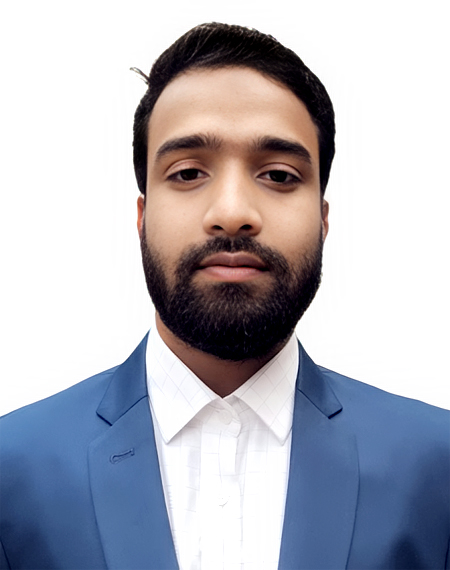

Ahmmed Abdullah SaquifSoftware Engineer |
|
ContactEmail : saquif.abdullah@gmail.com Mobile : 01907113482 Address : Kaunia, Rangpur EducationBachelor of Science in Computer Science & EngineeringYear : 2023 Skills
|
TrainingPython Django (Ostad)Bootstrap, HTML, and CSS for Front-end Development, MySQL is the database management system for storing data, and Backend Development uses Laravel. 3 Large-scale project (web application for e-commerce) with the front end, back end, and database mentioned above. PHP With Laravel Framework (BITM-BASIS-SEIP) April 2023 - July 2023Bootstrap, HTML, and CSS for Front-end Development, MySQL is the database management system for storing data, and Backend Development uses Laravel. 3 Large-scale project (web application for e-commerce) with the front end, back end, and database mentioned above. InternSoftware Engineer at Primeasia University (UMS) : Oct 2023 - Jan 2024Assisted in the development and testing of software applications using Laravel and other frontend technologies. Collaborated with senior engineers to design, code, and debug software features. Participate in code reviews, ensuring code quality and adherence to best practices. Gained hands-on experience with version control, MySQL, Laravel etc. ResearchComparative Analysis of Deep Learning Models for Heart Disease Prediction Using Electrocardiogram (ECG) Signals: A Focus on Convolutional Neural Networks (CNNs) |